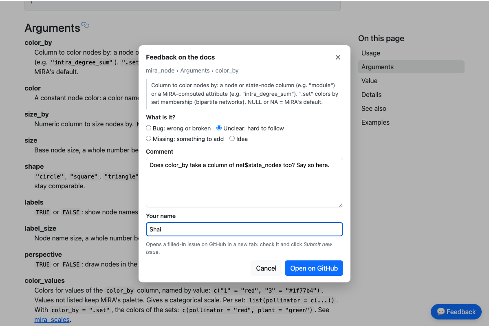

Thank you for testing ggmira. This guide tells you what to try, on which network, and what to look at. Report anything that is wrong, confusing or missing, and also what you could not figure out how to do, even if nothing broke (Leave feedback, at the end).
| Part | What | Time |
|---|---|---|
| 1 | Install, and the first plot | 15 minutes |
| 2 | Exporting figures, the main focus | about 1 hour |
| 3 | The features, each on a network that suits it | about 1 hour |
| 4 | Change a plot in MiRA and copy it back as R code | 15 minutes |
| 5 | A network of your own | as long as you like |
If two of you are testing, both do parts 1, 2, 4 and 5. Split part 3: one of you takes networks 17 and 23, the other networks 13 and 63.
1. Install
R 4.1 or later, and Google Chrome (or Chromium, or Microsoft Edge),
which mira_save() uses to draw the files:
install.packages(c("remotes", "emln", "chromote"))
remotes::install_github("Ecological-Complexity-Lab/ggmira")To get fixes and new features later, run
install_github() again and restart R. Plots need an
internet connection: MiRA loads its drawing libraries and map tiles from
the web.
The manual is this site, https://ggmira.ecomplab.com. Get started builds one plot step by step; read it first. Reference has a page per function, with every argument.
The first plot
library(emln)
library(ggmira)
net17 <- load_emln(17)
p <- mira(net17, bipartite = TRUE, setA_type = "bird")
p # opens in the browser
print(p, viewer = TRUE) # in RStudio: opens in the Viewer pane
mira_save(p, "first-plot.png") # a file, without opening a windowTell us, in one issue, whether each of the three worked, with your operating system, your browser, and whether you use RStudio. This matters most on Windows and Linux, where ggmira has not been run yet.
Each plot you open starts a small server. Stop them all, when you are
done, with httpuv::stopAllServers().
The networks
Not every network suits every feature: only one has links between layers, some have no coordinates, and so on. These four cover everything; each part below says which one to use.
| Network | What it is | Use it for |
|---|---|---|
load_emln(17) |
Birds and plants on two Galápagos islands. 4 layers, 129 nodes, two node sets, and the only network with interlayer links. | Bipartite layout, settings per node set, interlayer links, the map and the layer view |
load_emln(23) |
Fish and their parasites in Canadian lakes. 12 layers in 7 places, 311 nodes, two node sets. | Many layers: the grid, the map, layer colors and names, filtering layers |
load_emln(13) |
A Chilean intertidal food web. 3 layers, 106 nodes,
dense (4623 links), one node set, with numeric and text
node attributes (body_mass, cluster,
phyllum). |
Layouts, color scales and palettes, dense pictures, the meta-network |
load_emln(63) |
A marine food web over four years. 4 layers, 39 nodes, directed, link weights from 0.1 to 98. | Arrowheads, in- and out-degree, node names, weight filters |
mira_options(net) lists what a network offers to each
argument. Give it the same arguments as mira().
Two more, for edge cases: load_emln(7) has links with
weight 0 (R and MiRA should warn that they are not drawn), and
load_emln(38) is large (3490 nodes).
2. Exporting figures
mira_save() draws a plot in a browser that does not open
a window, and saves it as a PNG, JPG or PDF file. We want to know
whether the files are good enough to put in a paper, a poster and a
talk.
Run the blocks below in order. They write about 40 files into a
folder ggmira-beta in your working directory; each save
takes a few seconds. Then open the files and go through the checks under
each block.
library(emln)
library(ggmira)
dir.create("ggmira-beta", showWarnings = FALSE)
out <- function(name) file.path("ggmira-beta", name)
net17 <- load_emln(17)
p17 <- mira(net17, bipartite = TRUE, setA_type = "bird") +
mira_layout("bipartite", seed = 1, nested = TRUE) +
mira_node(color_by = "verification_level", size_by = "intra_degree_sum",
shape = c(bird = "square", plant = "circle")) +
mira_intralayer(color_by = "type") +
mira_interlayer(show = TRUE) +
mira_layer(color_by = "interaction_type", labels = TRUE) +
mira_legends()2.1 Formats and resolution
mira_save(p17, out("e1-default.png")) # 3000 x 1800 pixels
mira_save(p17, out("e1-res1.png"), resolution = 1) # 1500 x 900
mira_save(p17, out("e1-res4.png"), resolution = 4) # 6000 x 3600
mira_save(p17, out("e1.jpg"))
mira_save(p17, out("e1.pdf"))
mira_save(p17, out("e1-res4.pdf"), resolution = 4)- Does every file open, in the programs you normally use (an image viewer, a PDF reader, Illustrator or Inkscape if you use them)?
- Do the files have the sizes written above?
- Are all six the same picture? Zoom in on the text of the legends and the layer names: is it sharp at resolution 2 and 4?
- Is the PDF good enough to send to a journal? Note that the picture inside it is an image, not shapes you can edit.
2.2 Size and shape
width and height are the size of MiRA’s
window; the plot is fitted to it.
mira_save(p17, out("e2-wide.png"), width = 1800, height = 800)
mira_save(p17, out("e2-square.png"), width = 1100, height = 1100)
mira_save(p17, out("e2-tall.png"), width = 1024, height = 1400)
mira_save(p17, out("e2-small.png"), width = 1024, height = 600)- Is the network whole and reasonably centered in each?
- Do the legends cover the network in any of them?
- Is there a shape you needed and could not get?
2.3 Background
mira_save(p17, out("e3-white.png"), background = "white")
mira_save(p17, out("e3-transparent.png"), background = "transparent")
mira_save(p17, out("e3-white.pdf"), background = "white")- Put
e3-transparent.pngon a colored slide: is the background clear, with clean edges around the nodes, the legends and the text? - Which background would you use for a paper? Is anything missing (another color, no “Visualized with MiRA” mark)?
2.4 Legends
mira_save(p17, out("e4-no-legends.png"), legends = FALSE)
mira_save(p17 + mira_legends(show = "node_color", position = "top-right"),
out("e4-one-top-right.png"))
mira_save(p17 + mira_legends(position = "bottom-left"), out("e4-bottom-left.png"))
mira_save(p17 + mira_legends(show = FALSE), out("e4-hidden.png"))- Is each legend complete (title, every value, the size circles)?
- Are the legends where you asked, and of a size that fits the picture at each resolution?
- Could you make the legend you would want in a paper?
2.5 Every view
mira_save(p17 + mira_mode_grid(), out("e5-grid.png"))
mira_save(p17 + mira_mode_map(), out("e5-map.png"))
mira_save(p17 + mira_mode_layer(), out("e5-layer.png"))
mira_save(p17 + mira_mode_meta(color_by = "participation", labels = TRUE),
out("e5-meta.png"))
mira_save(p17 + mira_mode_meta(layout = "circular"), out("e5-meta-circular.pdf"),
background = "white")
mira_save(p17 + mira_mode_dashboard(), out("e5-dashboard.png"))
net23 <- load_emln(23)
p23 <- mira(net23, bipartite = TRUE, setA_type = "parasite") +
mira_layer(color_by = "location", labels = TRUE) +
mira_legends()
mira_save(p23, out("e5-23-network.png"))
mira_save(p23 + mira_mode_grid(columns = 4), out("e5-23-grid.png"),
width = 1800, height = 1100)
mira_save(p23 + mira_mode_map(), out("e5-23-map.png"))
mira_save(p23 + mira_mode_layer(), out("e5-23-layer.png"))
mira_save(p23 + mira_filter(layers = latitude > 54), out("e5-23-north.png"))
mira_save(p23 + mira_mode_meta(), out("e5-23-meta.png"))- Is each view whole, with nothing cut at the edges?
- Twelve layers (network 23): can you read the stack, the grid and the map? What would you change to make a figure of it?
-
e5-23-north.pngshould show only the lakes north of latitude 54, closed up into one stack. - A saved map shows the layers’ places, not the networks MiRA draws over the map after a click. Is that what you expected?
2.6 A dense network
In a saved file, links are drawn opaque and at least one pixel wide. On screen they are partly transparent. So a dense network can look heavier in the file than in the browser, and heavier at resolution 1 than at 4. We have not decided whether to keep this, and your opinion decides it.
net13 <- load_emln(13)
p13 <- mira(net13) +
mira_layout("kamada_kawai", seed = 1) +
mira_node(color_by = "phyllum", size = 6) +
mira_intralayer(color_by = "type", arrow_size = 0.3) +
mira_layer(labels = TRUE) +
mira_legends()
mira_save(p13, out("e6-dense-res1.png"), resolution = 1)
mira_save(p13, out("e6-dense-res2.png"), resolution = 2)
mira_save(p13, out("e6-dense-res4.png"), resolution = 4)
mira_save(p13, out("e6-dense.pdf"))
p13 # the same plot on screen- Compare the three files with each other and with the browser. Which one would you publish? Should a saved file look like the screen?
- Can you still see the nodes under the links?
2.7 Names and arrowheads
net63 <- load_emln(63)
p63 <- mira(net63) +
mira_layout("circle") +
mira_node(labels = TRUE, label_size = 10, size_by = "intra_in_degree_sum") +
mira_intralayer(min_weight = 20, arrow_size = 0.5) +
mira_layer(labels = TRUE, label_size = 20)
mira_save(p63, out("e7-labels.png"))
mira_save(p63, out("e7-labels.pdf"))
mira_save(p63 + mira_camera(zoom = 1.6, pan = c(0.25, -0.1)), out("e7-labels-close.png"))
mira_save(p63 + mira_mode_grid(), out("e7-grid-labels.png"))- Can you read the node names and the layer names? At which
label_sizedo they work for you? - Do the arrowheads and the link widths look right? Try
arrow_sizeandmin_weight. - In the grid, are names cut at the edges of the panels?
2.8 The file and the screen
Open a plot, set the view with the mouse (rotate, zoom, drag a
legend), click MiRA’s R button and copy the code. Paste
it into R, where it keeps the plot in p, and save that:
mira_save(p, out("e8-from-screen.png"))- Is the file framed like your screen? The camera is relative to the
window, so the match is exact only when
widthandheightare the size of your browser window. Tell us how far off it was, and your window size if you know it.
2.9 A figure for a paper
Make the figure a journal would ask for: for example 180 mm wide at
300 dpi, which is 2126 pixels
(width = 1063, resolution = 2).
mira_save(p17, out("e9-paper.png"), width = 1063, height = 700, resolution = 2)Put it in a Word, LaTeX or PowerPoint document at its real size.
- Are the text and the nodes large enough at that size? If not, could you fix it with the arguments ggmira has?
- Was it clear how to get from millimeters and dpi to
width,heightandresolution?
2.10 Mistakes and limits
Each of these should stop with a message that tells you what to do. Tell us about any message that did not help.
mira_save(p17, out("e10.tiff")) # not a format
mira_save(p17, out("e10.png"), format = "pdf") # format and extension differ
mira_save(p17, "no-such-folder/e10.png") # the folder does not exist
mira_save(p17 + mira_mode_data(), out("e10-data.png")) # the data view is a table
mira_save(p17 + mira_mode_map(), out("e10-map.png"), background = "white")
mira_save(p17, out("e10.jpg"), background = "transparent")These should work:
mira_save(p17, out("e10"), format = "pdf") # adds ".pdf"
mira_save(p17, out("e1-default.png")) # replaces the file, without asking
# links with weight 0: warnings from R and from MiRA, and a file
mira_save(mira(load_emln(7)), out("e10-zero-weights.png"))
# a large network: how long does it take on your computer?
p38 <- mira(load_emln(38), bipartite = TRUE)
system.time(mira_save(p38, out("e10-large.png"), timeout = 180))
system.time(mira_save(p38, out("e10-large.pdf"), resolution = 4, timeout = 180))- Did any save fail, hang, or take more than a minute? Send us the call and the time.
3. The features, by network
For each row, open the function’s reference page, start from the plot
in the “Start from” column, and try the arguments on that page. Look at
each plot in the browser, and save one or two with
mira_save().
p17 <- mira(net17, bipartite = TRUE, setA_type = "bird")
p23 <- mira(net23, bipartite = TRUE, setA_type = "parasite")
p13 <- mira(net13)
p63 <- mira(net63)| Feature | Start from | Try |
|---|---|---|
mira_layout() |
p13 |
Every type; the same seed twice (the same
picture?) and no seed. "bipartite" should be an error
here. |
mira_layout() |
p17 |
"bipartite" with and without nested. |
mira_node() color |
p13 |
color_by = "phyllum" (text), "body_mass"
(numbers), "cluster" (numbers that are groups). A constant
color. |
mira_node() size, shape, names |
p13, p63
|
size_by = "body_mass", size, each
shape, labels and
label_size. |
mira_node() per node set |
p17 |
color_by = c(bird = "intra_degree_sum", plant = "verification_level"),
shape = c(bird = "diamond", plant = "circle"),
color_by = ".set" with color_values. |
mira_node(highlight = ) |
p17, p63
|
"Geospiza_fortis" (17), "Decapods" (63).
Also in the grid and the meta-network. |
Scales (?mira_scales) |
p13 |
On body_mass: color_palette,
color_reverse, color_limits = c(0, 100). On
cluster: color_scale = "continuous". On
phyllum:
color_values = c(Algae = "darkgreen"). |
mira_intralayer() |
p13, p23
|
color_by = "type" (13) or "category" (23),
a constant color, palettes. |
mira_intralayer() weights, arrows |
p63 |
min_weight from 1 to 50; arrow_size. Node
size by "intra_in_degree_sum" and
"intra_out_degree_sum". |
mira_interlayer() |
p17 |
show, color, curvature,
min_weight,
pairs = list(c("layer_1", "layer_2")). No other network has
interlayer links. |
mira_layer() |
p23 |
color_by = "location", "interaction_type"
and "layer_name" with color_values;
labels, label_size, stack,
spacing. On p17: set_labels. |
mira_filter() nodes |
p17, p13
|
nodes = type == "bird" (17),
nodes = phyllum == "Mollusca" (13), node names. |
mira_filter() links, layers |
p63, p23
|
links = weight > 10 (63);
layers = latitude > 54 and layer names (23). Combine
two. |
mira_camera() |
any |
rotate, tilt, zoom,
pan. Then set the view with the mouse and read the values
under MiRA’s zoom buttons. |
mira_legends() |
p17 with a color_by and a
size_by
|
show, position,
show = FALSE. |
mira_mode_grid() |
p23 |
columns from 2 to 6, with a filter, with layer
colors. |
mira_mode_map(), mira_mode_layer()
|
p23, p17
|
Click a place on the map. With mira_filter(layers = ).
On mira(load_emln(14), bipartite = TRUE), which has no
coordinates, the map should be an error. |
mira_mode_meta() |
p17, p13
|
Every aggregation, layout,
color_by and size_by; labels;
layers = c("layer_1", "layer_2"); on p17,
nested and a color per node set. |
mira_mode_dashboard(),
mira_mode_data()
|
any | Open them. In the data view, filter a table and go back to the network. |
mira_options(), mira_spec()
|
any | Do they tell you what you need before making a plot? |
plot_mira() |
any |
plot_mira(net13), and with
mode = "meta". |
For every feature, we would like to know:
- Did the plot show what you asked for?
- When you made a mistake (a column that does not exist, a value out of range), did the message tell you what to do?
- Did the help page answer your questions? What was missing?
- Did the same plot look the same in the browser, in RStudio’s Viewer pane and in a saved file?
4. From MiRA back to R
A plot opened from R can be changed in MiRA, and MiRA’s R button (next to Save Session) gives the ggmira code for what you see.
- Open
p17(orplot_mira(net17, bipartite = TRUE, setA_type = "bird")). - In MiRA, change several things: the node color and size in the Nodes panel, a palette in a legend, the layout, the camera, a filter in the data view, the view itself.
- Click R, copy the code, paste it into R and run it.
- Is the new plot the one you had on screen? Tell us what differed.
- Is the code what you would have written? Is anything in it unclear?
- Were the comments under the code (what R cannot set) understandable?
5. Your own network
This is the most useful test. Build your network with
emln::create_multilayer_network() and make the figure you
would want for a paper or a talk, from the first plot to the saved
file.
- A bipartite network needs a
node_typecolumn innet$nodes(see Bipartite networks in?mira). - Columns you add to
net$nodes,net$extendedornet$layerscan be mapped like any other. - Tell us where you got stuck, what you could not do, and how long it took.
Known limits
No need to report these:
-
mira_filter()does not apply in the meta-network, which always shows the whole network;mira_mode_meta(layers = )dims layers there. - Arrowheads are large in dense directed networks: use
arrow_size. - The meta-network’s
"force"layout differs each time it opens. - A legend describes the whole network, also when a filter draws part of it.
- The map’s and the layer view’s own settings (opacity, bubble size) cannot be set from R yet.
Leave feedback
Report what is wrong, confusing or missing, and also what you could not figure out how to do, even if nothing broke. Every way below opens a new GitHub issue, already filled in: check it and click Submit new issue (sign in to GitHub first).
-
On a page of this site:
- select text, and click the 💬 Feedback bubble next to it;
- or click the 💬 next to a heading (it shows when the mouse is over the heading) for feedback on that section;
- or click the 💬 Feedback button at the bottom right, for the page.
The issue gets the page, section, argument and the selected text; add what you expected. Pick the type: bug, unclear, missing or idea.
-
From R, for example when something breaks while you work:
mira_feedback("mira_node", "color_limits seems ignored with color_by = \".set\"") mira_feedback("Getting started", "Step 6: what is a link condition?", type = "unclear")The issue gets your R session (R, ggmira and package versions).
In MiRA: its Feedback button, for the visualizer itself.
With a bug, add the code you ran and, if it helps, a screenshot of MiRA (paste it into the issue before submitting).
For a problem with a saved file, use
mira_feedback("mira_save", "..."), name the file from part
2 (for example e6-dense-res1.png) or paste the call, and
drag the file into the issue. One issue per problem is easiest for us;
opinions (“I would publish the resolution 4 file”) are as welcome as
bugs.
